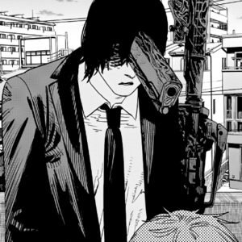

About Aki Hayakawa
The deuteragonist of the main story of Chainsaw Man, Aki Hayakawa is a man who makes a slow decent through the hellish journey of Denji. Acting as lancer of the group will his skills really be up to bat when facing seemingly insurmountable odds or will he strike out at worst possible moment?
Aki Da Baby
The Sigma Mindset of Aki Hayakawa
- Always helps out his friends
- Has a Glock as his head
- Knows how to play snowball fight
Aki's Friends
Aki played a vital role in the growth Denji in the series. He was tasked to be with Denji in the first few chapters and was fond of Denji till the end. Throughout the series, he also had befriended with other Devil Hunters: